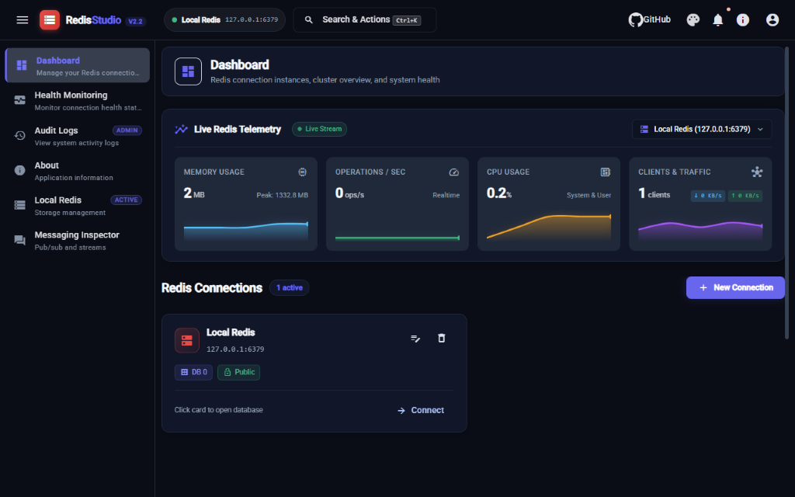

TELEMETRY

SCREEN 01 • LIVE TELEMETRY & CONNECTIONS
Live Operations & Health Cockpit
Catch memory spikes, throughput bottlenecks, and saturation early with sub-second live metrics — zero polling overhead on production.
- 4 real-time SLA pulse monitors: Memory Usage (RSS & Peak), Throughput ops/sec, CPU %, and Connected Client Traffic.
- Unified environment cards showing host, active DB, TLS security state, and 1-click production connect controls.
- Built-in RBAC navigation (Dashboard, Health Monitoring, Audit Logs [ADMIN]) plus Ctrl+K global Command Palette.
Real-Time MetricsZero-Polling OverheadMulti-Environment HubCtrl+K Search